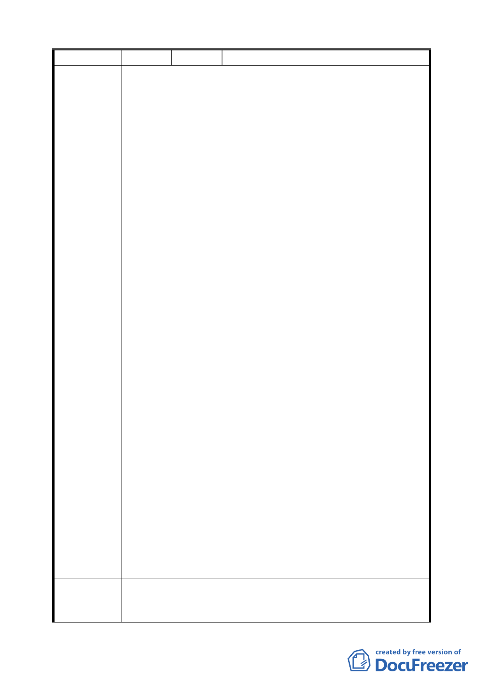

編號
陳情理由
建議辦法
２ 陳情人 國防部
針對 貴府都市計畫「變更臺北市松山區美仁段 1 小段 16 地
號等 9 筆土地為公園用地計畫案」，本部表明異議。
一、案內土地與本部空軍總部有涉者，為松山區美仁段 17、
17-1、17-3、17-4 等 4 筆國私共有及同段 18-26、18-27、
18-28 等 3 筆國有土地。上述土地原為老舊眷村「松山新
村」原址，原奉行政院 79 年 11 月 7 日台 79 內 3229 號函
核准改建，惟因畸零地處理問題分割保留未規劃施工形成
改建剩餘土地，並奉行政院 87 年 8 月 17 日 87 內 40771
號函核准移交國產局依法處理，得款撥充「國軍官兵購置
住宅貸款基金」。即案內土地有涉國庫公益，合先敘明。
二、有關貴府計畫案，相關陳述過於簡略且有與事實不符之虞，
本部補充說明並提出異議如下：
(一)88 年標脫其中 3 塊土地，係國產局依行政院核示事項
辦理，並非由空軍總部標脫。而當年得標人取得土地後因
居民抗爭阻撓開發，致經協調退還得標人價款（含利息）
方式，恢復國有非公用狀態。
(二)有關案內土地現址經綠化並供社區使用之不當現象，
雖經本部空軍總部歷年協調，仍遭居民拒不配合無法按國
有財產法處理。貴府以提昇該地區生活環境品質變更原使
用分區立意固佳，惟仍應考量本部及國產局等行政機關維
護國有財產之責任。另就本案土地利用問題前經多位中央
及地方民意代表召開協調會中，本部或空軍總司令部表
示：因本案土地原即住宅區，屬行政院專案核定變產置產
之不動產，若須依現況再行變更使用分區，請貴府能以有
償撥用或容積移轉方式配合辦理，惟未獲貴府支持。
(三)對於貴府提昇該地區生活環境品質並能兼具解決目前
土地使用之現況符於法規，本部自當認同，惟查本案公告
書圖並未符合行政院頒「各級政府機關互相撥用公有不動
產之有償與無償劃分原則」第 1 項但書第 3 款「應辦理有
償撥用」之規定，特表異議，並重申本部立場，冀盼貴府
能以「有償撥用」、「容積移轉」或其他能兼顧國庫公益之
方式處理本案，至紉公誼。
一、計畫案相關陳述請予以補充說明。
二、土地請以「有償撥用」、「容積移轉」或其他能兼顧國庫
公益之方式處理。
委員會
決議
有關土地取得方式，公有地依規定辦理撥用。
三